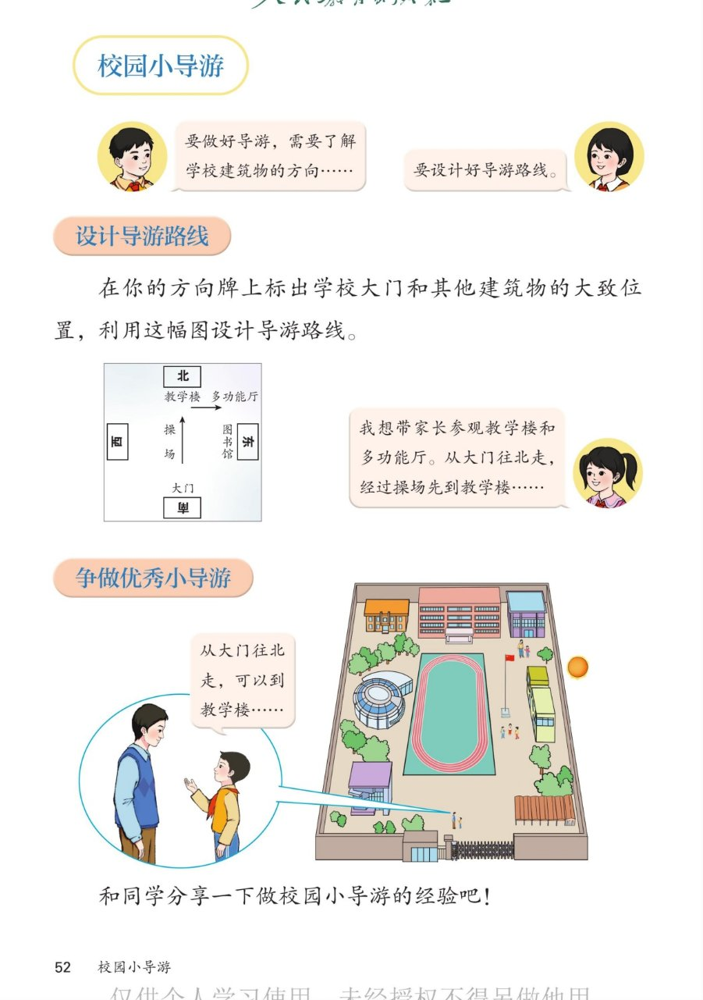

🔊 综合与实践 · 校园小导游 · 课本第 52 页 · 设计导游路线
人教版《数学》二年级上册 · 有声图文带读 · 先想后看解析 · 用方向牌设计并介绍路线
题数
6
认知
2
强化
3
拓展
1
本页重点
方向牌标位置 · 说清路线方向 · 争做优秀小导游
🎧 分两步学：
① 解析教材图片
——纯声音读图，读到哪一块哪一块闪动提示；关键处先倒计时让你思考，再在图片下方给出解析并朗读。
② 分层提问练习
——六道分层题（认知 / 强化 / 拓展），先思考再展开解析、朗读参考答案；这一步不再回到图片。
也可以随时点任意一句话、图上任意一块单独听；点课本文字卡还会展开答案。
教材图片（点块听读，读到哪块哪块闪）

📖 人教版《数学》二年级上册 · 课本第 52 页 · 图片仅供个人学习，版权归人民教育出版社所有
🤔 想一想（点我可跳过）
课本的文字（点句子：听读 + 看答案）
小导游准备
当好导游的两件事
看答案 ▾
① 了解学校建筑物的
方向
（东、南、西、北）；
② 设计好
导游路线
（先到哪、再到哪、往哪走）。
方向牌图
在方向牌上标出建筑物
看答案 ▾
按
上北、下南、左西、右东
标位置：
北面：
教学楼、多功能厅
；中间：
操场
；
东面：
图书馆
；南面：
大门
。
导游路线
女孩是怎么介绍路线的？
看答案 ▾
路线三要素：
出发点
（大门）→
方向
（往北走）→
顺序
（经过操场，先到教学楼，再到多功能厅）；
🌈 用方向说路线，别人不会走错
展示环节
争做优秀小导游
看答案 ▾
像小导游一样
大声介绍
：从大门往北走，可以到教学楼……
分享经验：先认方向，再标位置，最后把路线
按顺序
说清楚。
分层提问练习（先想后看解析）
🚪
认知
方向牌图上，大门在什么方向？
看解析
🤔 想一想
解析：
大门在
南面
（图的最下方）。
地图
上北下南
，最下面就是南。
🏫
认知
教学楼和多功能厅在方向牌的哪一面？
看解析
🤔 想一想
解析：
都在
北面
（图的最上方）。
地图
上北
，最上面就是北。
🧭
强化
从大门到教学楼，要往哪个方向走？
看解析
🤔 想一想
解析：
往
北
走；
大门在南、教学楼在北，南和北相对，向北走正好到达。
🚶
强化
从教学楼到多功能厅该怎么走？再说一条回大门的路线。
看解析
🤔 想一想
解析：
教学楼到多功能厅：往
东
走；
回大门：从教学楼往
南
走，经过操场就到大门。
💡 说路线三要素：出发点、方向、顺序
📝
强化
设计导游路线要注意什么？
看解析
🤔 想一想
解析：
先按
上北下南左西右东
标好位置；
介绍时讲清
出发点、方向、先后顺序
。
🌈
拓展
设计一条你自己的导游路线，像小导游一样介绍出来。
看解析
🤔 想一想
解析：
示例：从大门
往北
走，经过操场到教学楼；
往东
走到多功能厅；
再
往南
走到图书馆，最后回到大门。
🌈 方向清楚 + 顺序清楚 = 优秀小导游
① 解析教材图片
② 分层提问练习
⏹ 停止
纯声音 + 高亮跟随 · 想好才出解析
← 返回导航